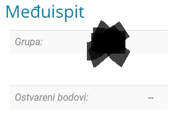

Jesu li došli rezultati iz MI možda?
Ja sam slučajno na ispitu kao podsjetnik koristio A4 papir na kojem je nešto isprintano na jednoj strani, ne znajući da podsjetnik mora biti napisan isključivo rukom. Kolega asistent je potom nešto zapisao u onu njegovu listu pored mog imena i sad nezz šta.
U nastavnim aktivnostima imam ovo, a ne nulu ili neku statistiku ostalih studenata:
